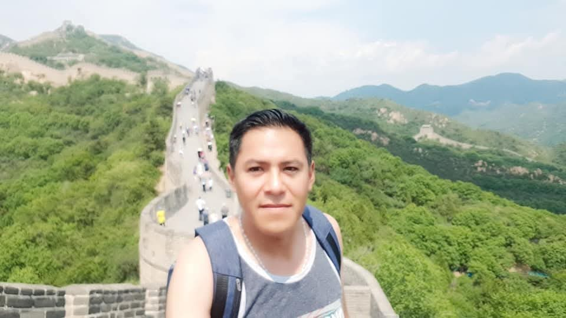

ME GUSTA VIAJAR

DURANTE LOS AÑOS DE MI VIDA HE VIAJADO MUCHO CONOSCO PAICES COMO CHILE, LA CIUDAD DE CALAMA, CONCEPCION, EN AQUELLA OCACION TUBE QUE ESPERAR DE MANERA FORZADA DOS SEMANAS ADICIONALES POR QUE ME SORPRENDIO EL TERREMOTO DE 2010 Y TUBE QUE SALIR POR VIA TERRESTRE YA QUE LOS VUELOS ESTABAN CORTADOS
CONOSCO ARGENTIDA LAS CIUDADES FRONTERIZAS DE CORDOVA Y LA QUIACA
CONOSCO BRASIL LAS CIUDADES DE SAU PAULO, CAMPO GRANDE Y CORUMBA
CONOSCO FRANCIA LA DIUDAD DE PARIS
CONOSCO CHINA LA CIUDAD DE PEKIN, XIAMAN, WOHAN, XIANYANG
CONOSCO PORTUGAL LA CIUDAD DE LISBOA
CONOSCO ESPAÑA, LAS CIUDADES DE BARCELONA, MADRID, MALAGA, GRANADA, SEVILLA
LA COMIDA

COMER ES UN COMPLEMENTO DE MI VIDA, PROBAR, EXPERIMENTAR SABORES, COMIDA TIPICA Y TRADICIONAL DE DONDE VISITO, CIUDADNO SIEMPRE QUE NO ME HAGA DAÑO "JAJAJAJAJA" QUE HE TENIDO MUCHO MALESTAR ESTOMACAL POR ESO, CUENTA COMO EXPERIENCIA
DEDICAR MI TIEMPO A DIOS HACIENDO MUSICA DE ATALABANZA Y VIDEOS